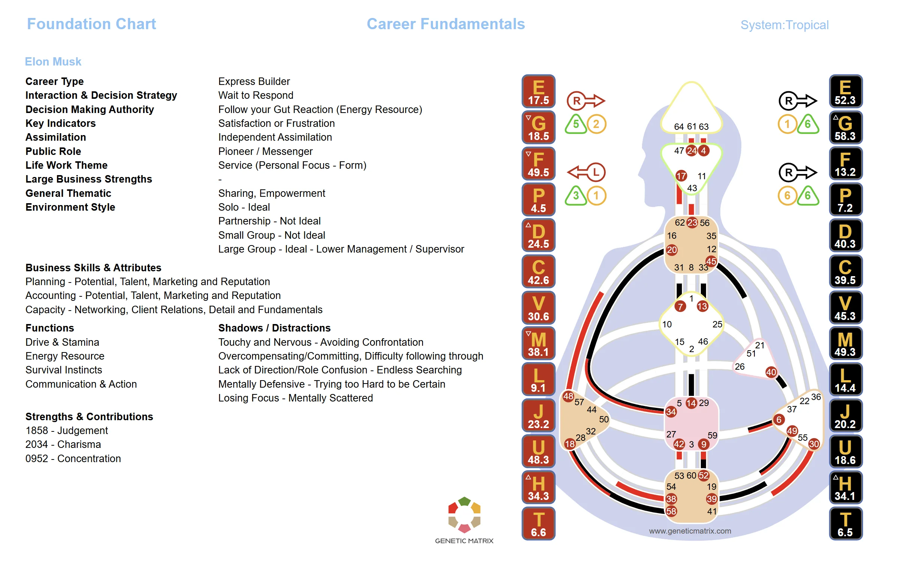

When groups grow beyond 9, a larger transpersonal form called the WA emerges. The OC16 describes the 16 Channels through which the WA conditions individuals to serve the collective.
The WA is a trans-auric form that emerges when 9 or more people come together. Unlike the Penta, which operates within the auric field of a small group, the WA extends beyond individual auras and creates a collective conditioning field by organizing Pentas. It is the mechanical basis of how larger organizations, communities, and tribes function.
The OC16 refers to the 16 Channels, made up of 6 core Channels and 10 sub-Channels, through which the WA operates. These Channels define the roles and functions that the WA demands from individuals within the group. The WA does not serve the individual. It conditions individuals to serve the whole, turning people into functional components of a larger collective body.
Nine or More People
The WA begins to form when a group reaches 9 or more people. At this scale, the transpersonal form shifts from the Penta's small-group mechanics to the WA's collective mechanics. The WA is the energetic form behind organizations, companies, communities, churches, and any large group. The Pentas within the larger group do not disappear. They remain active as small-group units, but within the whole they are subject to the greater pull of the WA to come together and serve the collective.
The Collective Operating System
The OC16 consists of 6 core Channels and 10 sub-Channels that define the WA's mechanical structure. These Channels are organized into six departments: Management, Competitiveness, Direction, Interaction, Logic, and Innovation. Individuals whose designs activate OC16 Channels are naturally pulled into serving those functions within the group.
Serving the Collective
The WA conditions individuals to serve collective needs rather than personal ones. When you are part of a large organization, the WA's mechanics override aspects of your individual design. You may find yourself behaving in ways that serve the group but do not align with your personal Strategy and Authority. This is not a flaw. It is the mechanical reality of how large groups function.
How the WA Manages Power
The WA has specific Channels dedicated to governance and leadership. These determine how authority is distributed, how decisions are made at scale, and how the collective maintains its structure. The leadership dynamics of the WA are mechanical, not democratic. They operate at the collective level, with Tribal Channels dominating management roles within the WA.
How the WA Manages Material
Like the Penta, the WA has Channels dedicated to resource management. At the WA scale, this includes how organizations handle money, infrastructure, material assets, and human resources. The WA's resource Channels determine how wealth flows through the organization and how members are compensated for their contributions.
How the WA Transmits Information
The WA has specific Channels for communication and education. These govern how information is disseminated within the organization, how knowledge is transmitted to new members, and how the collective narrative is maintained. Organizations with strong communication Channels in their WA tend to have clearer culture and messaging.
How the WA Organizes Work
The WA's Channels determine how work is assigned, structured, and evaluated within the collective. These mechanics shape job roles, team configurations, and the overall workflow of the organization. Individuals whose designs activate OC16 Channels are naturally drawn into seniority and productive roles within the collective group. These activations are highly valued.
Scale Changes Everything
The Penta operates within the auric field of 3 to 5 people. The WA extends beyond individual auras and creates a trans-auric field that conditions people at a larger scale. Both are impersonal transpersonal forms, but they operate at fundamentally different scales and with different mechanical demands.
Note
The WA is the mechanical reality behind all large organizations. Whether it is a corporation, a community, a government, or a religion, the WA's mechanics shape how individuals are conditioned to serve the collective. Understanding the WA helps explain why people often feel and behave differently within large organizations than they do on their own.
Genetic Matrix applies transpersonal mechanics using business-oriented labels that help translate group dynamics into practical analysis.

Business-oriented group analysis showing how transpersonal mechanics translate into practical team labels. Click to enlarge.
The WA is a trans-auric form that emerges when 9 or more people come together. It extends beyond individual auras and creates a collective conditioning field by organizing Pentas. The WA conditions individuals to serve collective needs, turning them into functional components of a larger organizational body.
OC16 refers to the 16 Channels through which the WA operates. This includes 6 core Channels and 10 sub-Channels. These Channels are organized into six departments: Management, Competitiveness, Direction, Interaction, Logic, and Innovation. Together, they form the mechanical operating system of larger groups.
The Penta operates within the auric field of 3 to 5 people. The WA activates at 9 or more people and extends beyond individual auras to create a trans-auric conditioning field. The Pentas within the larger group do not disappear, but they are subject to the greater pull of the WA to come together and serve the collective. Both are impersonal transpersonal forms, but they operate at different scales.
The WA conditions individuals to serve collective functions, which can override aspects of personal design. When you are part of a large organization, you may find yourself behaving in ways that serve the group but do not align with your individual Strategy and Authority. This is the mechanical reality of how large groups work. Awareness of WA mechanics helps you recognize when collective conditioning is influencing your behavior.
Yes. Genetic Matrix provides tools for analyzing group dynamics at the WA level. You can explore how individual designs contribute to the OC16 Channels and better understand how the collective mechanics of larger groups shape roles and conditioning.
The same Penta mechanics applied to small business teams, with terminology adapted for the workplace.
Explore the transpersonal mechanics that emerge in small family groups of 3 to 5 people.
When two people come together, a new design emerges. See the mechanics of any relationship.
Explore how individual designs interact within larger group configurations with Pro-level analysis tools.
Get Pro →